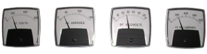

This condition will definitely affect the performance of the Precipitator since any field not operating correctly will have impact on the outlet emissions. When both the voltage and current are low it usually means that either excessive sparking is occurring in the precipitator or electrical noise is entering the control cabinet. Possible causes of the above events are as follows:
Electrical noise can enter the control through the electrical line feed or through the feedback signals from the secondary of the TR. Typically; the only noise that affects the control through the line feed is fast rise time transients generated by variable frequency drives or SCR type motor speed controls. An Oscilloscope will be necessary to detect these transients. If they are present, adding inductive filters to the feed of the offending motor control will usually solve the problem. The common entry of noise is through the TR secondary feedback signals. (In particular, the secondary current signal.) Electrical noise on this line can be interpreted by the control as sparking, and cause the control to back down on power in an effort to maintain a reasonable spark rate. Check for noise on the secondary current signal, with an oscilloscope.